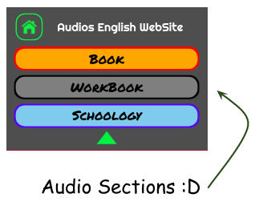
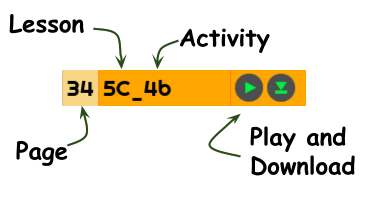
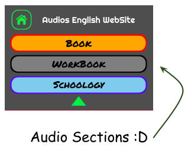
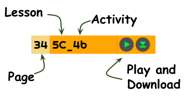
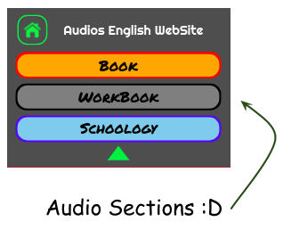
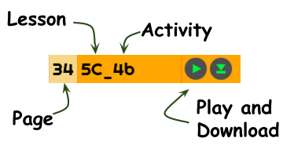
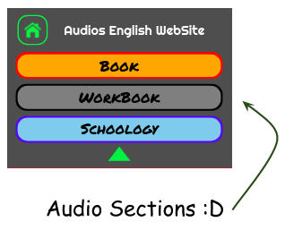
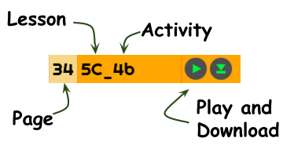

How to use this site?
 



NOTA: Los audios no se precargan con la página para evitar el uso innecesario de datos. El audio se busca y carga al momento del 'play', por lo que puede tardar un par de segundos en comenzar.
 



NOTA: Los audios no se precargan con la página para evitar el uso innecesario de datos. El audio se busca y carga al momento del 'play', por lo que puede tardar un par de segundos en comenzar.